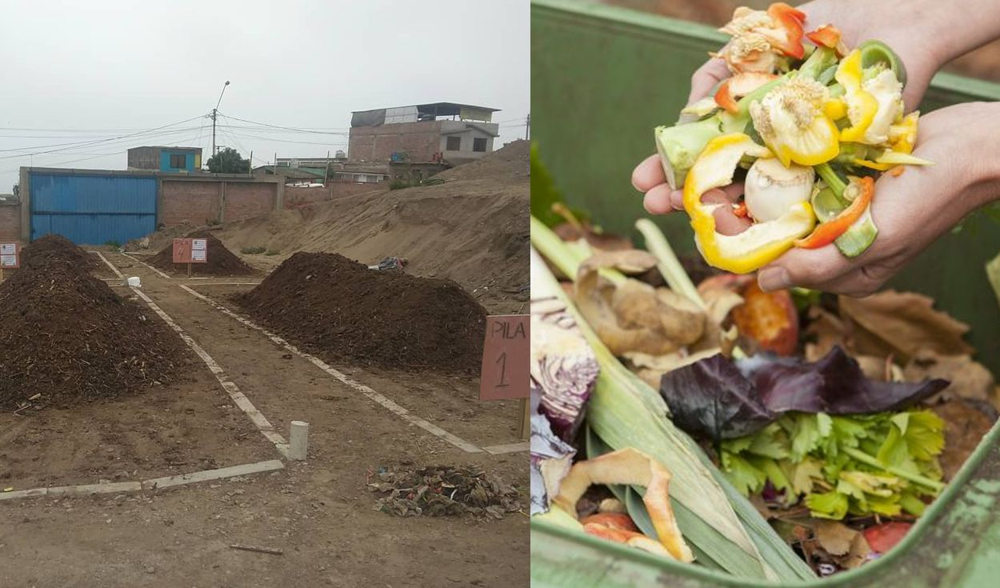
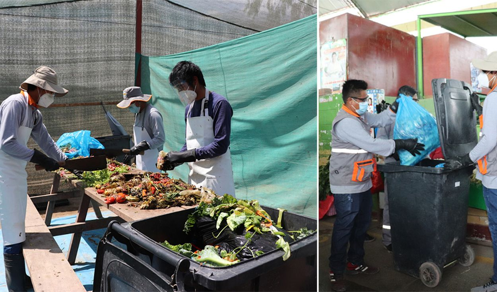
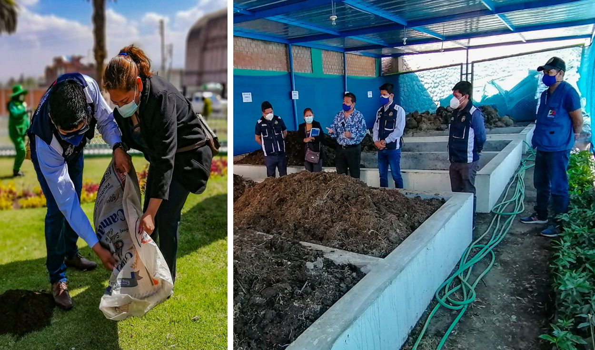
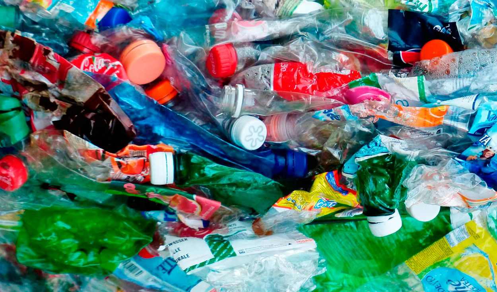
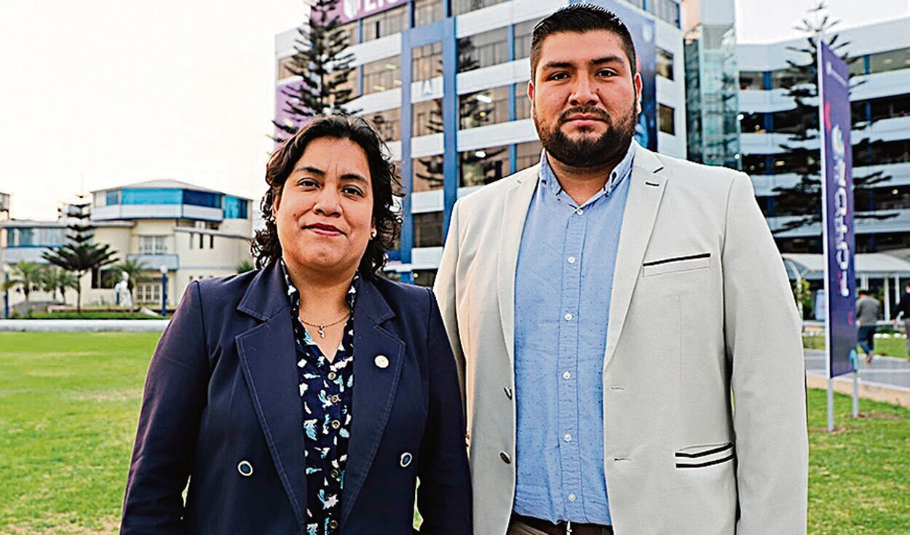
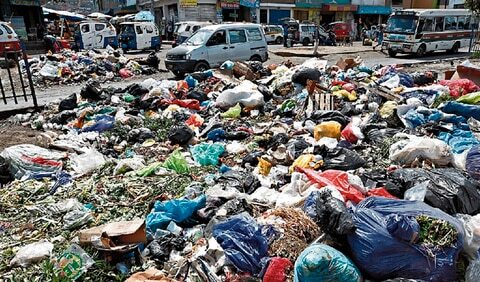
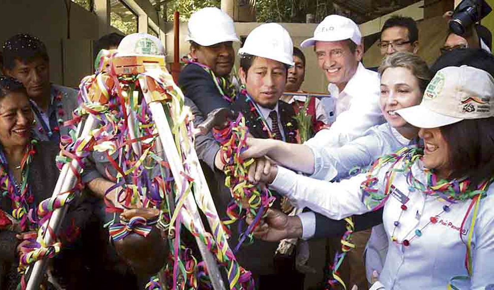

Bioflash, empresa que convierte desperdicios orgánicos en abono natural

Bioflash es una de las empresas promovidas por Incubagraria de la Universidad Nacional Agraria La Molina (Unalm) que cuentan con modelos de negocios validados. La firma se dedica a convertir los desperdicios naturales en abono orgánico.
Hasta el momento, más de 1.000 toneladas de desechos de cuatro distritos de Lima fueron tratados con un líquido de residuos agroindustriales para convertirlos en fertilizante natural, según informó su gerente, Brenda Costas Sosa.
“De estas 39 empresas, 24 accedieron a más de 1 millón y medio de soles en concursos de Innóvate Perú. Desde el 2016, más de 200 emprendimientos recibieron asesoría, y para este año, capacitaremos a 30 más”, puntualizó la funcionaria.
Costas indicó que impulsan la creación de empresas de nivel aceptable, viables y autosuficientes, con el respaldo de Innóvate Perú, que durante tres años los ha apoyado con acompañamiento técnico y un financiamiento de S/ 700.000.
Sostuvo que las iniciativas se ubican en Cajamarca, Amazonas, Áncash, Lima, Cusco, San Martín, Ucayali, Huánuco, Pasco y Loreto. Con ello, buscan poner en valor los recursos naturales y su uso sostenible, así como la recuperación de las tradiciones ancestrales. Esto se lleva a cabo en áreas como agricultura, alimentación, biotecnología y turismo; y que, al dedicarse a la alimentación nutritiva, vida saludable, disminución de residuos orgánicos, se van sumando a la economía verde.
Por ser parte de la Asociación Peruana de Capital Semilla y Emprendedor, según precisó Brenda Costas, facilitan a los emprendedores e innovadores una red de contactos de inversionistas y, mediante socios estratégicos como la Agencia de Cooperación Internacional de Corea-Koica y la Fundación Wadhwani de la India, acceden a financiamientos y capacitaciones.
Bioflash ha trabajado con las comunas de Villa El Salvador, Villa María del Triunfo, Magdalena y Pueblo Libre, y, en comparación con el sistema tradicional de llevar la basura a un relleno sanitario, ahorran un 40% en el transporte. Además, el tiempo de degradación de 90 o 120 días (promedio) se logra de 30 a 45 días.
Otras de las innovaciones es Oxamanía, que se dedica a la elaboración de mermelada de rocoto en Oxapampa. Ahí antes se desechaban cientos de kilos de ají semanales y con el ingreso de las nuevas ideas podría cambiar la realidad para los pequeños agricultores.
Tacna: elaboran abono para parques con residuos orgánicos de mercados

Los residuos orgánicos de frutas o verduras que son desechados por los comerciantes de los distintos mercados del distrito de Ciudad Nueva en Tacna son utilizados para la elaboración de abono.
El personal de la Subgerencia de Gestión Ambiental de este municipio ha encontrado en esto una forma para contribuir con el cuidado del medio ambiente. El abono que procesan los utilizan después como fertilizante para tener mejores áreas verdes en los parques y principales vías del distrito.
La subgerente de Gestión Ambiental, Olivia Cáceres Carrasco, contó que desde inicios del presente año empadronaron a los comerciantes de los mercados del distrito con quienes trabajan de manera directa.
Los vendedores los abastecen de residuos orgánicos como cáscaras, restos de frutas y vegetales. El acopio son todos los lunes, miércoles y viernes. Un equipo de compostaje del municipio acude a los mercados de la jurisdicción a recolectar los residuos que los comerciantes generan, luego son llevados al vivero municipal situado al interior del estadio La Bombonera para su transformación en compostaje.
En el lugar, los promotores ambientales separan los desechos orgánicos recolectados de plásticos o alguna impureza, luego son trozados en pequeñas partes para acelerar el proceso de compostaje y finalmente son apilados formando una capa que será revuelta varias veces en el plazo de 3 a 4 meses como máximo para su uso como abono natural en las áreas verdes.
Los comerciantes que apoyan al municipio, al final de año reciben víveres u otros incentivos por su colaboración desinteresada. “Los residuos que generan los vendedores de los mercados bien podrían terminar en la basura, pero gracias a su contribución estos desperdicios se convierten en fertilizante para la tierra”, sostuvo la funcionaria.
Arequipa: inauguran planta que generará abono orgánico en Paucarpata

La Municipalidad de Paucarpata, en Arequipa, inauguró su primera planta de compostaje que servirá para generar abono orgánico. La meta de producción anual corresponde a 100 toneladas. Este producto permitirá servirán para mejorar las áreas verdes en dicha jurisdicción.
El proyecto se encuentra a cargo de la subgerencia de Calidad Ambiental y Salud a cargo del ingeniero Jimmy Capia. El alcalde José Supo participó en la inauguración de esta planta de compostaje e indicó que es una alternativa rentable.
“Se evitará que las cáscaras de frutas o verduras sean trasladadas a un relleno sanitario. De esta forma, vamos a ahorrar gasolina, trabajo de personas y la compra de estos bionutrientes. Ahora estamos produciendo el propio. Estamos contribuyendo al cuidado de la economía y del medio ambiente”, indicó el burgomaestre.
La planta permitirá reutilizar todos los desechos orgánicos que eran desperdiciados. El plan para este 2021 es colocar contenedores en cada uno de los 14 mercados del distrito para que las familias y comerciantes depositen este material.
Se trata de frutas o verduras, ya sean las cáscaras o los productos parcialmente malogrados. Además, se utilizará el acumulado de las podas en áreas verdes generado por colaboradores de la subgerencia de Limpieza Pública en Paucarpata.
El abono orgánico que producirá la planta de compostaje será dispersado en todos los parques y jardines del distrito. Este producto fortalecerá las raíces y enriquecerán el suelo, obteniendo bellas áreas verdes y sostenibles.
El primer parque en donde se utilizó el producto fue la plaza principal de la jurisdicción. También participaron el gerente municipal, Cesar Bustamante; regidora Ericka Velasquez; gerente de Servicios Públicos, Franco Navarro y el subgerente de Limpieza Pública, Miguel Garate.
Residuos sólidos: en Perú se generan a diario 20 mil toneladas de desechos

Según el Ministerio del Ambiente (MINAM), en el Perú diariamente se generan en el ámbito municipal aproximadamente 20 mil toneladas de residuos sólidos. Y de ese total, el 49% son dispuestos adecuadamente en los 50 rellenos sanitarios existentes, mientras que el 50% son llevados a los 1585 botadores identificados por el inventario de áreas degradadas por residuos sólidos elaborado por OEFA. Pero apenas el 1% de residuos-entre orgánicos e inorgánicos-se valoriza.
Bajo este panorama, se informó que el próximo 31 de marzo, vence el plazo para que todas las municipalidades provinciales y distritales del Perú, reporten y actualicen sus actividades de manejo de residuos sólidos ejecutadas en el 2019.
Trujillo: investigadores generarán energía con desechos orgánicos

La Libertad. Investigadores trujillanos pondrán en marcha un ambicioso proyecto para generar bioelectricidad a partir de residuos orgánicos y usando celdas de combustible microbiana de una sola cámara. Los autores de este plan innovador son Segundo Rojas Flores, quien cuenta con una maestría en ciencias físicas; y Magaly de la Cruz Noriega, microbióloga clínica y docente universitaria. Ambos forman parte del Instituto de Investigación en Ciencia y Tecnología de la Universidad César Vallejo.
Este proyecto podrá ver la luz gracias a una subvención económica de S/60,000 que les dará el Fondo Nacional de Desarrollo Científico y Tecnológico (Fondecyt), conseguido tras ganar el concurso del Concytec.
A través de la construcción de innovadores prototipos tecnológicos, el referido proyecto pretende disminuir la contaminación ambiental, así como también aprovechar los residuos para producir energías limpias y seguras. Según el Servicio de Gestión Ambiental de Trujillo, la ciudad genera mil tonaledas diarias de basura.
“El interés por encontrar nuevas fuentes de energía nos ha llevado a investigar e identificar a todas aquellas células microbianas presentes en la descomposición de la materia orgánica; ya que muchas de ellas poseen electrodos con carga positiva y negativa que generan electricidad”, expresó Segundo Rojas.
El 50% de la basura de los hogares es orgánica y reutilizable ¿Cómo aprovecharla?

“El 50% de los residuos sólidos de nuestras casas es compostable, es orgánico. Si lo separamos y llega a plantas de tratamiento habrá un ahorro también para el municipio y pueden dar mejores servicios y generar espacios públicos para los ciudadanos”, señaló la titular del sector Ambiente.
Ello, durante visita al “Parque Ecológico Mayta Cápac” de San Martín de Porres. Allí, las autoridades visitaron la planta de valorización de residuos sólidos orgánicos, la misma que genera más de 400 kilos al día de abono orgánico que es utilizado en las áreas verdes del distrito.
Este abono orgánico es utilizado para nutrir las plantas ornamentales del invernadero municipal.
Durante la presentación de la estrategia, los funcionarios también acudieron al centro de acopio de residuos aprovechables, el mismo que es gestionado por una asociación de recicladores, a través de un “modelo ambiental sostenible”.
Actualmente, en el Perú se generan 19,000 toneladas al día de residuos sólidos, lo que equivale a tres estadios nacionales llenos de basura.
Según datos del Ministerio del Ambiente, apenas el 52% tiene una disposición final ambiental y sanitariamente segura en los rellenos sanitarios, el 44% termina en botaderos y solo el 4% es reaprovechado. Esta situación debe cambiar y debemos incrementar drásticamente los residuos que aprovechemos y eliminar los botaderos a nivel nacional.
La ministra Ruíz, acompañada del alcalde de la Municipalidad Distrital de San Martín de Porres, Julio Chávez, señaló que los ministerios, gobiernos regionales y locales se están convirtiendo en agentes de cambio, promoviendo el consumo responsable para no generar residuos sólidos e incentivando la separación de los mismos para estimular el reciclaje.
“La población debe apoyar desde su hogares la segregación y separación de residuos sólidos que generan”, manifestó.
Machupicchu convertirá su basura órganica en carbón vegetal con planta

Cusco. El distrito de Machupicchu, provincia de Urubamba, inauguró la primera planta de valorización de residuos sólidos que transforma materia orgánica en carbón vegetal. Esta infraestructura es la primera con estas características en el Perú.
El equipo pesa tres toneladas y fue obtenido en calidad de donación por gestiones y coordinaciones con los grupos Inka Terra y el Grupo Aje para reducir la basura orgánica y sólida.
El carbón vegetal producido por esta planta será usado como abono en los proyectos de forestación y reforestación, así como para mejorar la producción agrícola en los centros poblados del distrito. Cabe precisar que de 14 toneladas de basura que produce el pueblo de Machupicchu, el 60% son residuos orgánicos.
Machupicchu Pueblo tiene alrededor de 5 mil habitantes y recibe más de 7 mil turistas cada día. En el lugar hay más de seis mil restaurantes, hoteles, locales de comida rápida y viviendas, que son los principales generadores de desechos.